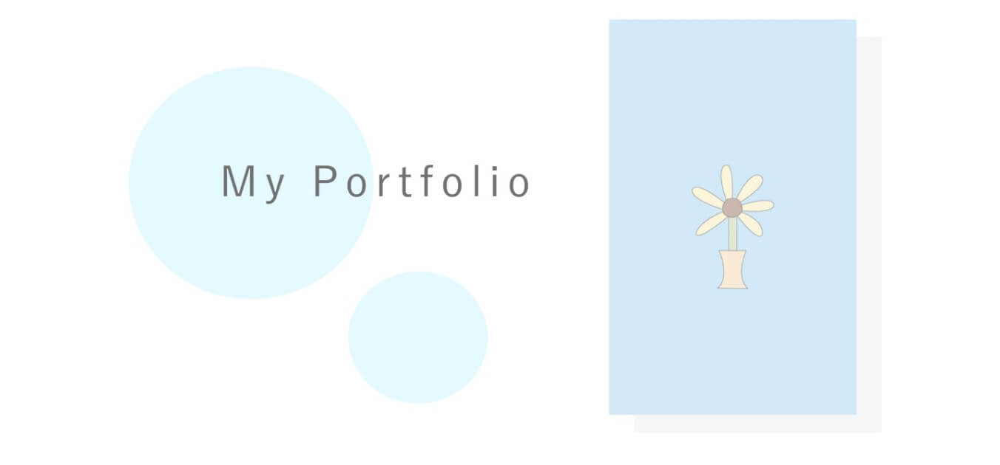

Works
制作したもの

| 制作期間 | 1週間（コーディングのみ） |
|---|---|
| 使用技術 | HTML/CSS |
| 対応機種 | SP/PC |
デザイン制作者：akane (@omsss22)
※下記のサイトのAdobe XDを元にコーディングをしています。

| 制作期間 | 未定（今後も追加や更新予定のため） |
|---|---|
| 使用技術 | HTML/CSS/Adobe XD/Photoshop/Illustrator |
| 対応機種 | SP/PC |
・自分らしさをコンセプトに私が好きな青空や海をイメージした清楚感のある色を選びました。
・Adobe XDでのデザインカンプにはじめて挑戦をしました。今後はFigmaからのカンプ作成やコーディングに挑戦予定です。